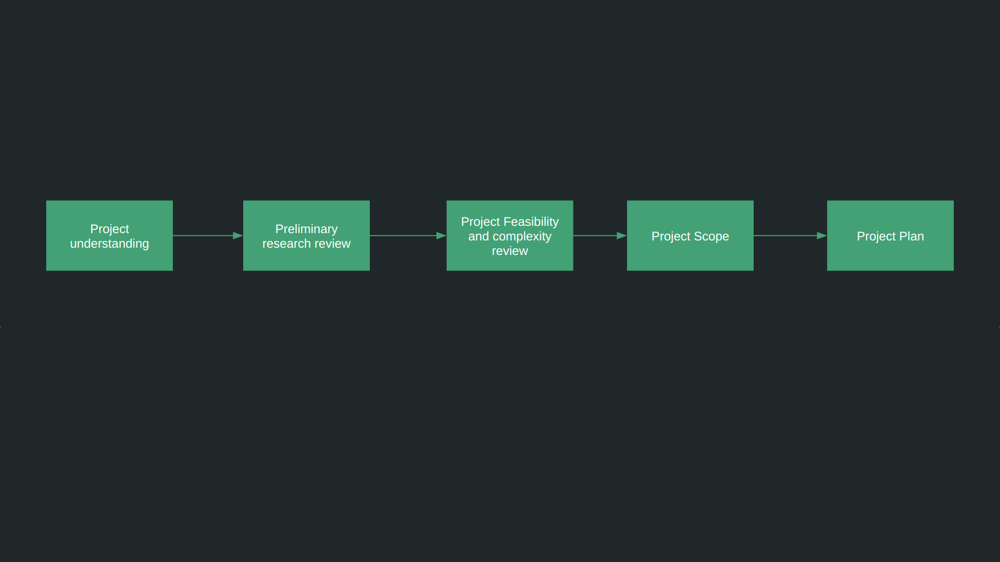
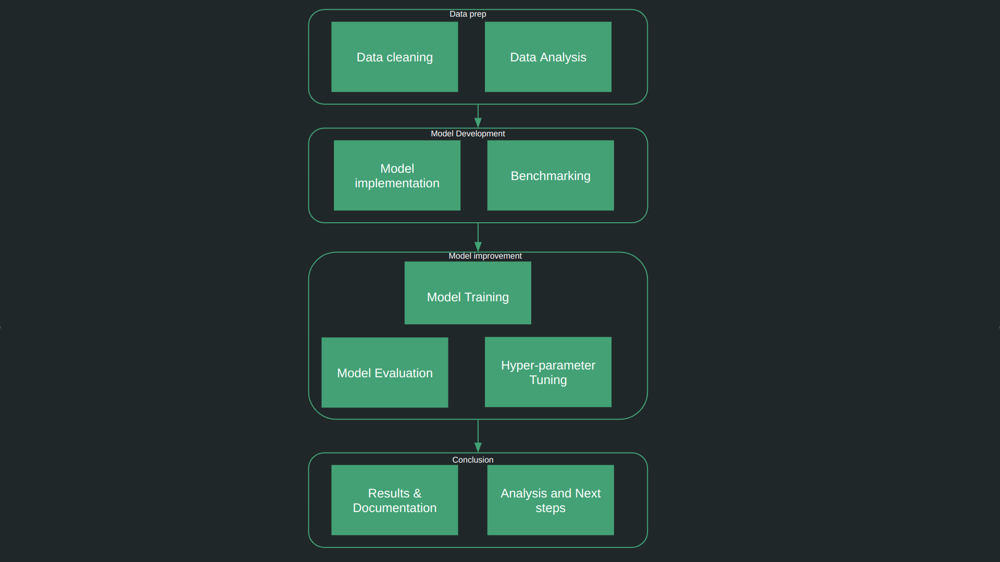
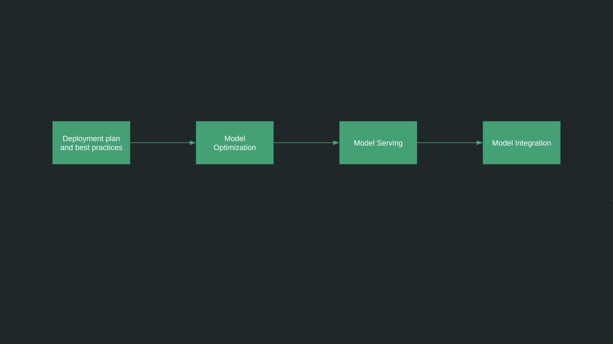

Nikhil Salodkar
About
Projects
My Services
Blog
Contact
I can provide my expertise in three different levels of project development, starting phase, Intermediate development stage and at production stage.

AI/ML Project startup and Requirement Analysis consultation
Understanding requirements
Assessing feasibility
Preliminary research
Defining of Scope
Project planning

Implementing Proof of Concepts and building prototypes
Exploratory Data Analysis
Proof of Concept implementation
Prototype development
Research Paper Implementations

Taking to production
Solution Architecture Development
Project planning
Production Model Deployment
Model Integration Model Optimization